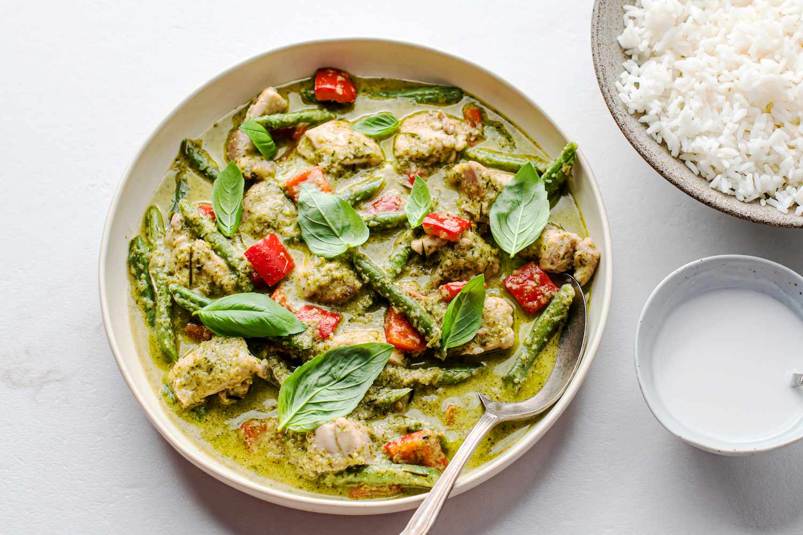

Recipes
As the chill of winter sets in, I wanted to share some of my favorite recipes that are perfect for this cozy season. Get ready to indulge in the warmth and comfort of these dishes that will make your taste buds dance with joy. First up, let's talk about hearty curries. There's nothing quite like a steaming plate of curry to warm you up from the inside out. One of my go-to recipes is a comforting thai green curry. The rich flavors of the green curry paste and vegetable broth create a symphony of taste that is both soothing and satisfying. Pair it with a crusty bread or jasmine rise for the ultimate winter comfort food experience.
When it comes to main courses, I can't resist a classic Indian Butter Chicken. The slow-cooked tender chunks of chicken, mingling with vibrant spices and aromatic herbs, create a dish that is pure comfort on a cold winter's night. The rich and creamy gravy and the depth of flavors that develop over time make this Indian Butter Chicken an absolute winner. Serve it with roti or jasmine rice and you have a hearty meal that will keep you warm and content.
Another winter favorite of mine is a comforting Italian Mushroom Risotto. The slow cooking process tenderizes the rice & mushrooms, infusing it with rich flavors and creating a melt-in-your-mouth experience. I love to pair it with jasmine rice or warm ciabatta bread. It's a hearty and satisfying dish that warms both the body and the soul.
These are a few of my favourite winter recipes:
Thai
- 2 tablespoons green curry paste
- 1 can (13.5 ounces) coconut milk
- 1 cup chicken or vegetable broth
- 1 pound boneless chicken breasts or tofu, cut into bite-sized pieces
- 1 cup mixed vegetables (such as bell peppers, zucchini, and green beans)
- 2 tablespoons fish sauce (or soy sauce for a vegetarian version)
- 1 tablespoon palm sugar or brown sugar
- 4-5 kaffir lime leaves, torn (optional)
- 1 red chili pepper, sliced (optional, for extra heat)
- Fresh basil leaves, for garnish
- Cooked jasmine rice, for serving
Thai Green Curry
Ingredients:
Instructions: In a large saucepan or wok, heat a tablespoon of oil over medium heat. Add the green curry paste and cook for 1-2 minutes until fragrant. Pour in the coconut milk and chicken or vegetable broth. Stir well to combine and bring the mixture to a gentle simmer. Add the chicken or tofu to the simmering curry sauce. Cook for about 5 minutes until the chicken is cooked through or the tofu is heated. Add the mixed vegetables to the curry and continue cooking for an additional 3-4 minutes until the vegetables are tender-crisp. Stir in the fish sauce (or soy sauce) and palm sugar (or brown sugar) to balance the flavors. Adjust the seasoning according to your taste. If using kaffir lime leaves and sliced chili pepper, add them to the curry and let them infuse for a few minutes. Remove the curry from heat. Serve the Thai green curry over cooked jasmine rice. Garnish with fresh basil leaves and additional sliced chili peppers if desired.
Enjoy your homemade Thai green curry!
Indian
- 1.5 pounds boneless, skinless chicken thighs or breasts, cut into bite-sized pieces
- 1 cup plain yogurt
- 2 tablespoons lemon juice
- 1 tablespoon ginger paste
- 1 tablespoon garlic paste
- 1 teaspoon ground cumin
- 1 teaspoon ground paprika
- 1 teaspoon ground turmeric
- 1/2 teaspoon red chili powder (adjust to your preferred spice level)
- Salt to taste
- 4 tablespoons unsalted butter
- 1 large onion, finely chopped
- 2 teaspoons ginger paste
- 2 teaspoons garlic paste
- 2 teaspoons ground coriander
- 2 teaspoons ground cumin
- 1 teaspoon ground paprika
- 1/2 teaspoon ground turmeric
- 1/2 teaspoon red chili powder (adjust to your preferred spice level)
- 1 can (14 ounces) crushed tomatoes
- 1 cup heavy cream
- 1 tablespoon honey or sugar
- Salt to taste
- Fresh cilantro leaves, for garnish
- Cooked basmati rice or naan bread, for serving
Indian Butter Chicken

Ingredients:
For the marinade:
For the marinade:
Instructions: In a bowl, combine all the marinade ingredients (yogurt, lemon juice, ginger paste, garlic paste, ground cumin, ground paprika, ground turmeric, red chili powder, and salt). Mix well. Add the chicken pieces and coat them evenly with the marinade. Cover and refrigerate for at least 1 hour, or overnight for best results. Preheat the oven to 400°F (200°C). Place the marinated chicken pieces on a baking sheet and bake for about 15-20 minutes until cooked through. You can also cook the chicken on a stovetop grill or skillet until browned and cooked. In a large pan or skillet, melt the butter over medium heat. Add the chopped onion and saute until golden brown, around 5-6 minutes. Add the ginger paste and garlic paste to the pan and cook for another 1-2 minutes. Add the ground coriander, ground cumin, ground paprika, ground turmeric, and red chili powder to the pan. Stir well and cook for 1-2 minutes to toast the spices. Pour in the crushed tomatoes and simmer for about 5 minutes, stirring occasionally. Reduce the heat to low and stir in the heavy cream and honey (or sugar). Add salt to taste. Simmer the sauce for an additional 5-7 minutes until it thickens slightly. Add the cooked chicken pieces to the sauce and simmer for another 5 minutes, allowing the flavors to meld together. Garnish with fresh cilantro leaves and serve the Indian Butter Chicken with cooked basmati rice or naan bread.
Enjoy your flavorful Indian Butter Chicken!
Italian
- 1.5 cups Arborio rice (or any other short-grain rice suitable for risotto)
- 4 cups vegetable or chicken broth
- 1 cup white wine (optional)
- 1 tablespoon olive oil
- 1 tablespoon unsalted butter
- 1 onion, finely chopped
- 2 cloves garlic, minced
- 8 ounces mushrooms (such as cremini or button mushrooms), sliced
- 1/2 cup grated Parmesan cheese
- Salt and black pepper to taste
- Fresh parsley, chopped (for garnish)
Italian Mushroom Risotto
Ingredients:
Instructions: In a saucepan, heat the vegetable or chicken broth over medium heat. Keep it warm throughout the cooking process. In a large, heavy-bottomed pot or Dutch oven, heat the olive oil and butter over medium heat. Add the chopped onion and minced garlic, and sauté until they become translucent and fragrant, about 3-4 minutes. Add the sliced mushrooms to the pot and cook until they release their moisture and start to brown, about 5-6 minutes. Add the Arborio rice to the pot and stir it to coat it with the oil and butter mixture. Cook for about 2 minutes, stirring constantly, until the rice grains become slightly translucent. If using, pour in the white wine and stir until it is absorbed by the rice. Begin adding the warm broth to the pot, one ladleful at a time. Stir the rice constantly and allow each ladleful of broth to be absorbed before adding the next one. Continue this process until the rice is cooked al dente, tender but still slightly firm to the bite. It usually takes around 20-25 minutes. Taste the risotto and season with salt and black pepper according to your preference. Remember that the Parmesan cheese will add some saltiness as well. Stir in the grated Parmesan cheese and mix until it melts and creates a creamy texture. Remove the pot from heat. Let the risotto rest for a couple of minutes. This will allow the flavors to meld together. Serve the Mushroom Risotto in bowls or plates, garnished with fresh parsley. You can also add some extra grated Parmesan cheese on top if desired.
Enjoy your delicious Italian Mushroom Risotto!
Leave a Comment
Testimonial
"The Indian Butter Chicken recipe is absolutely amazing! The flavors are rich and perfectly balanced. The chicken is tender and juicy, and the creamy sauce is to die for. It's my go-to dish whenever I want to impress my friends and family. Highly recommended!"